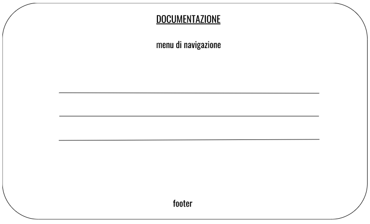

PROJECT MANAGEMENT PLAN
1. Benchmarking
Il sito nasce con l’obiettivo di aiutare gli utenti a svolgere attività creative di qualsiasi natura (dalla fotografia alla danza, dalla scrittura al disegno) o in momenti di blocco creativo attraverso la musica.
L’utente potrà ascoltare la canzone consigliata e farsi ispirare da essa per sviluppare un’idea.
Il target di riferimento è composto da giovani dai 12 ai 35 anni circa.
Data l’assenza di competitors che proponessero questo stesso servizio ho analizzato alcuni aspetti di altre piattaforme:
-Spotify è la piattaforma più amata dai giovani per lo streaming di musica. Presenta una grande offerta di titoli ma non test per gli utenti. La funzione più simile è la creazione di una playlist di canzoni consigliate proposta all’utente una volta a settimana basata su ascolti precedenti. Non vi sono sezioni specifiche per l’ispirazione artistica amenochè l’utente non digiti parole chiave nella search bar per trovare playlist create da altri o dalla piattaforma stessa (operazione che può risultare lunga e difficile).
-altri siti come Chosic permettono all’utente di selezionare alcuni parametri per poi consigliare canzoni simili. Anche in questo caso l’utente deve avere le idee ben chiare su cosa sta cercando.
-ho poi analizzato il test sul sito Buzzfeed. All’utente viene consigliata una canzone dopo aver compilato un lungo test dove è necessario descrivere il proprio stato d’animo a parole (es ‘angry’, ‘calm’…). Da qui l’idea di realizzare il test Music2feel tramite immagini invece che parole per renderlo più veloce e intuitivo.
2. Struttura e layout
-Architettura sito
La struttura di Music2feel è estremamente semplice e intuitiva

-Wireframe
HOME
la pagina home ospita direttamente il test così che l’utente venga invogliato a svolgere il test anche se poco interessato
IL TUO RISULTATO
si accede a questa pagina tramite il bottone alla fine del test oppure tramite il menù di navigazione. L’utente dovrà concentrarsi sul risultato che corrisponde alle risposte date precedentemente.
DOCUMENTAZIONE
suddivisa in paragrafi

-Look and feel
Il design è minimal per far concentrare l’utente sulle immagini del test. Inoltre si vuole assecondare i tempi di attenzione brevi del target di riferimento. Il sito non presenta lunghi paragrafi di testo perciò il font utilizzato è Oswald sans-serif, di maggiore impatto.
I colori utilizzati sono accattivanti ma non troppo brillanti per non distrarre dal test.
Menù di navigazione e footer sono mantenuti identici in tutte le pagine per agevolare l’esplorazione del sito e mantenere coerenza.
Si enfatizza il link alla pagina Instagram dedicata, così da invogliare l’utente alla condivisione del risultato ottenuto (call to action).
Il risultato del test viene accompagnato solamente dal videoclip Youtube, così che l’utente possa ascoltare direttamente la canzone senza aprire altre pagine web.
3. Linguaggi e strumenti
-HTML per la programmazione
-Bootstrap per grafica e interazione utente
-CSS per la grafica
-Github per la pubblicazione del sito
-Google Font per font utilizzati
-FontAwesome per icone
-Youtube e Pxhere per contenuti multimediali
-Google Analytics per monitorare i dati relativi al sito
COMMUNICATION STRATEGY
1. Background
Music2feel è una piattaforma pensata per assistere l’artista (professionista o meno) nella fase di ideazione della propria opera, cosa che le piattaforme più conosciute di streaming musicale non includono. L’idea è di fornire uno spunto musicale in base a un breve test così da modellare il risultato in base a ciascun utente. Il punto di forza di questo test è l’assenza di domande: l’utente dovrà solo scegliere l’immagine più allineata con il proprio stato d’animo. A differenza di altre piattaforme, l’utente non deve sforzarsi per rispondere a domande o attivarsi autonomamente per cercare canzoni/playlist dedicate all’ispirazione artistica.
L’organizzazione del sito è pensata per una user experience semplice e veloce, senza passaggi inutili e dispersivi.
2. Obiettivi comunicativi
l’obiettivo del sito è principalmente quello di ispirare creativamente le persone, in particolare in momenti di blocco creativo o di difficoltà nel leggere la propria interiorità. L’utente dovrebbe poter trovare l'input per dar vita al proprio progetto creativo. Perciò:
-primo obiettivo: ottenere l’engagement da parte degli utenti. In un primo momento nello svolgimento del test; in un secondo momento nella realizzazione del progetto creativo.
-secondo obiettivo: consiste nello sviluppo di un’efficace campagna di comunicazione per il sito.
-terzo obiettivo: consiste nello sviluppare efficacemente i contenuti per la campagna di comunicazione. L’intento è creare non solo contenuti efficaci che spingano l’utente a visitare il sito, ma anche contenuti di qualità che vengono apprezzati per quello che sono.
3. Target audience e messaggio
Il target a cui Music2feel si rivolge è una fascia di età compresa tra i 12 e i 35 anni circa. Il target è accomunato da una passione per la produzione creativa (di qualunque tipo e attraverso qualunque medium artistico). Data la giovane età del target il mezzo migliore per pubblicizzare il sito sono i social media.
Per invogliare il target a visitare il sito ho utilizzato colori e grafiche accattivanti ma minimal: se è vero che l’aspetto estetico gioca un ruolo importante per chi si interessa di arte, l’obiettivo del sito è proporre un risultato previa partecipazione attiva dell’utente.
La principale barriera alla diffusione del messaggio di Music2feel è il disengagement degli utenti: è possibile che chi entra nel sito non voglia dedicare tempo a un test, per quanto breve e immediato.
Music2feel si propone di aiutare gli utenti a recuperare o aumentare l’ispirazione creativa per i propri progetti. L’idea è che il mondo interiore dell’utente venga espresso attraverso le scelte fatte nel test e che queste portino a un consiglio musicale adatto al tipo di ispirazione che si cerca.
L’utente dovrebbe scoprire nuove canzoni che gli suggeriscano un’idea, un’atmosfera.
La canzone vuole essere punto di inizio per lo sviluppo di un progetto creativo personale. Per questa ragione il sito si colloca in una fase iniziale del processo creativo, per poi far sì che l’utente lasci Internet e crei qualcosa di concreto.
4. Promozione
Si sviluppa sui social. In particolare su Instagram, social che si differenzia per l’uso di immagini, per questo molto vicino a chi si interessa di creatività. Il sito è accompagnato da un profilo instagram ufficiale @music2feell con una serie di post dedicati che riprendono la grafica e i colori del sito. Questi sono alternati a foto in bianco e nero, così da far risaltare le immagini del test proposto su sito. I soggetti riprendono temi di musica e arte.
Se in un futuro il progetto Music2feel avesse a disposizione fondi maggiori, sarebbe utile pubblicare annunci digitali su piattaforme di settore e annunci fisici in centri artistici di vario genere.
5. Valutazione dei risultati
-primo obiettivo:
completato tramite il raggiungimento di almeno 3 tag sul profilo Instagram dedicato, ovvero almeno 3 utenti che hanno postato il progetto creativo realizzato con l’aiuto del sito sul feed o nelle storie. In questo modo si è misurato l’engagement da parte degli utenti e si è verificato se di fatto il risultato del test ha portato alla realizzazione di progetti creativi.

-secondo obiettivo:
raggiunto tramite l’ottenimento di almeno 60 visite al sito, verificando così l’efficacia della campagna di comunicazione sui social per il lancio di Music2feel. La misurazione di questo dato è avvenuta tramite Gooogle Analytics.
-terzo obiettivo: raggiunto attraverso l’ottenimento di almeno 15 like per ciascun post pubblicato sul profilo instagram ufficiale.